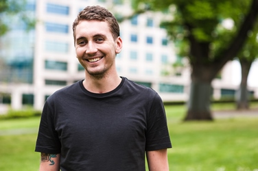

safespace Youth National Reference Group
The safespace Youth National Reference Group (hY NRG) is made up of a diverse group of young people of varying ages, genders and cultural backgrounds. The group represent each state and territory and work with safespace to ensure young people's voices and opinions remain front and centre.
The hy NRG team is made up of a group of people who are passionate about making a difference in the lives of young people. Hailing from all over Australia and from a diverse set of backgrounds, many of the hy NRG team have experienced their own struggles but overcome them to become advocates of youth mental health.
hy NRG makes sure that any new initiative from safespace will make a positive difference in the lives of young people, and the resources safespace receive from government and corporate partners are put to the best use.
Amelia
Amelia Walters
Where are you from?
Brisbane
Why did you want to become a hY NRG member?
I am interested in creating meaningful change within my communities and hope that through this role I can explore current community concerns and transform experiences for empowerment and inspiration.
As a young person, I am passionate about improving the everyday experiences of youth. I hope to be an advocate of youth mental health, to change our current cultural narrative so that it is coloured with the many unique stories and experiences of young people. Sharing stories and being heard is so crucial to well-being and recovery, as well as eliminating the enduring stigma.
What issues are you passionate about?
On my journey, I have found that it is connecting with others that gives me hope and I want to help others. I am about how we can change the world by making small changes in our community; through building more inclusive, connected communities that equip our young people with the resilience, inspiration and sense of personal power that allow them to flourish.
An interesting fact about Amelia:
I'm an adventurer and explorer in every sense of the word; from hiking mountains to investigating the depths of a novel.
Anna
Anna Brockman
 Where are you from?
Where are you from?
Melbourne
Associated centre:
safespace Collingwood
Why did you want to become a hY NRG member?
I see safespace as a very open minded organisation whose youth centred approach to working with young people continues to promote change and empowerment for young people. I feel very passionate about working with young people. I am a person who likes to stomp my feet about injustices in the world and this position gives me the perfect standing to do so.
What issues are you passionate about?
I am a big advocate for people who suffer with both mental health and drug and alcohol issues. I would like to have a say on how safespace can work holistically with this vulnerable group of people to reduce the systemic barriers affecting them. I feel especially passionate about working with young people as they are more susceptible in exhibiting and developing dual diagnosis symptoms related to physical health (disabilities), psychological vulnerabilities and socio-economic risk factors.
An interesting fact about Anna:
My favourite past time is flighting and boxing. I have been doing karate for 10 years and hold a black belt. Which is very hard for most people to grasp since I live in hippy pants with rainbow coloured hair.
Elizabeth
Elizabeth Woolley
Where are you from?
North Queensland
Associated centre:
safespace Cairns
Why did you want to become a hY NRG member?
Helping others has been a large part of my life, being able to improve, implement and deliver better outcomes is important. This position lets me do this and work with people who have likeminded ideas and new ways of viewing these issues, this is very exciting and I am honoured to be a hY NRG member.
What issues are you passionate about?
I am passionate about tackling issues people are still reluctant to talk about; to improve how vocational education is being given to young people, and creating a sustainable idea that mental health is incredibly important and will always continue to be. This generation is in a very important time of change, this is only going to be another area which we can improve on.
An interesting fact about Elizabeth:
I am one of four children and all my siblings are adopted; we have all made Australia our home.
Max
Max Simensen
Where are you from?
The Central Coast, New South Wales
Associated centre:
safespace Gosford
Why did you want to become a hY NRG member?
I've accessed youth mental health services and it sparked a huge passion to help people in a similar situation to me. I've also worked at safespace Gosford for 18 months and fell in love with safespace and everything they stand for. I really respect safespace and wanted to be a part of the national team.
What issues are you passionate about?
I'm super passionate about inclusion for all diversities, with a specialism in LGBTIQ and advocacy.
An interesting fact about Max:
I was bitten by a wombat when I was 5 and they've been my favourite animal ever since.
Trent
Trent Caldwell
Where are you from?
Broome
Associated centre:
safespace Broome
Why did you want to become a hY NRG member?
safespace got me back to my feet when I thought I'd exhausted all avenues of help.
I want others to realise too that it isn’t over and that there is a light at the end of the tunnel and we all sometimes need help to get there.
What issues are you passionate about?
My passion is for young people to achieve their full potential. Life has a funny way of knocking us down to the point where we think we can't get up. I'm living proof that it is possible to rise up, dust yourself off and use it to achieve what you thought would have been impossible.
An interesting fact about Trent:
When I was 19, a soccer goal post collapsed on my head and crushed my skull, putting me into a 2 week coma that I was never supposed to wake from. I've had to learn to walk, talk and even feed myself again; I'm an award - winning half blind portrait artist now.